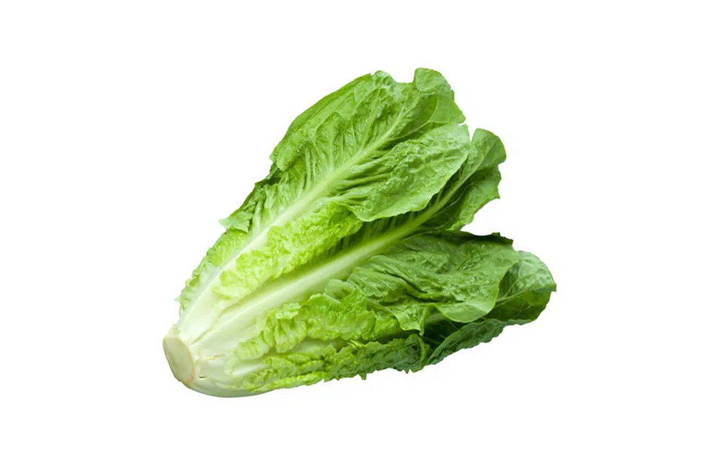
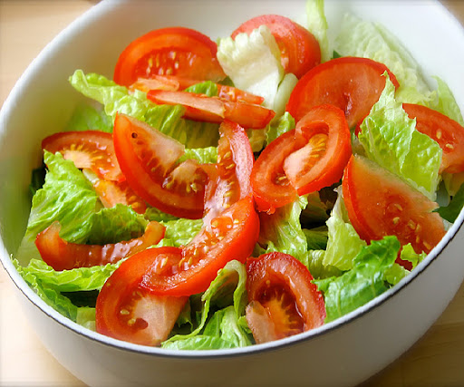

Volver al menú
Ensalada sencilla
Índice
Ingredientes
Paso a paso
Resultado final
Ingredientes
Lechuga 
Tomate
Aceite y sal
Paso a paso
Lava la
lechuga
y ponla en un bol.
Corta el
tomate
en trozos y añádelo encima.
Añade un poco de
aceite y sal
al gusto.
Resultado final

Volver arriba